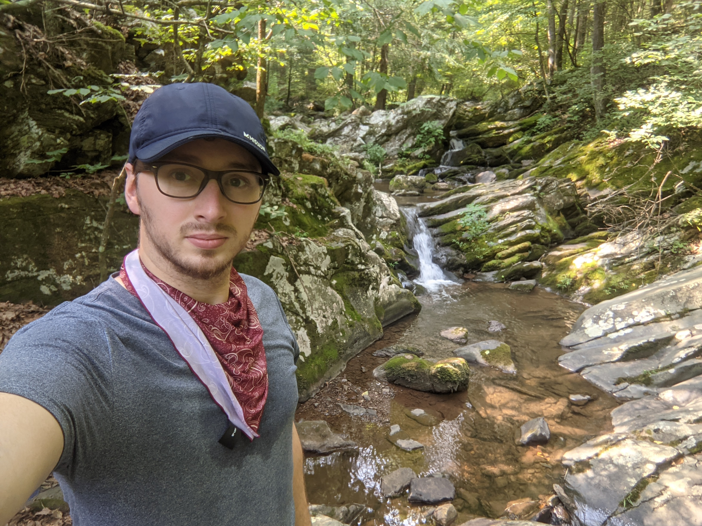

Walt Griggs

Walter is a Senior at Old Dominion University that majors in the Computer Science department. Having developed a passion for the subject as a teenager, he seeks to find a carrier within the field that would best suit his skillset and abilties. Much of his free time is spent modding video games, writing fictions, and playing tabletop Dungeons and Dragons with friends.
Lukas Mckennedy

Lukas is a former Infantry Assaultman in the United States Marine Corps, and currently works full-time for a government contractor as a systems administrator. He earned his A.S. in Computer Science from Tidewater Community College and is working on earning his B.S in Computer Science. He is also working towards a minor in Cyber Security and plans to transition into the Cyber Security field. He currently lives with his wife and two dogs in Norfolk, Virginia, and they are having a house built in Texas. His main hobby is competing in powerlifting meets.
Matthew Peet

Matthew is currently a senior at Old Dominion University majoring in Computer Science. His passion for computer science had sprouted from his childhood love for videogames and puzzles. He hopes to pursue a career at both NASA and Space X upon recieving his degree. Not only does Matt wish to pursue the computer science field, there is another side of him that wants to become an actor. With his hard work and dedication, he plans on pursuing that potential experience once he has established his dream job. Some of his hobbies include competitive gaming, spending time with his girlfriend and dog, and cooking.
Nathan Potter

Nathan is currently in his senior year at Old Dominion University where he is majoring in Computer Science. Nathan has ventured further than his academic curriculum, by attending a nanotechnology training course offered by the NSF and working as an Undergraduate Researcher exploring image processing. Outside of his academics, Nathan likes to literally get outside. He loves all forms of physical fitness but is primarily focused on completing his first marathon race this coming March.
Gabriel Gerdes
Gabriel is a Senior at Old Dominion University in the Computer Science department. Since 2018 he has been working as a software developer for a company that provides custom software and service integration for bothe the ports of Virginia and the ports of North Carolina. He values his time with his wife and dog but otherwise, he enjoys rock climbing, games, and snowboarding.
Nick Shirley
Nick is currently a senior year at Old Dominion Uniniversity as undergraduate majoring in Computer Science. A former member of the U.S. Navy, he left to finish his degree in Computer Science and looking to begin a career in Cyber Security or appication software development.
Sheel Patel
Bio....